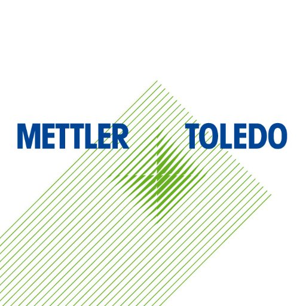
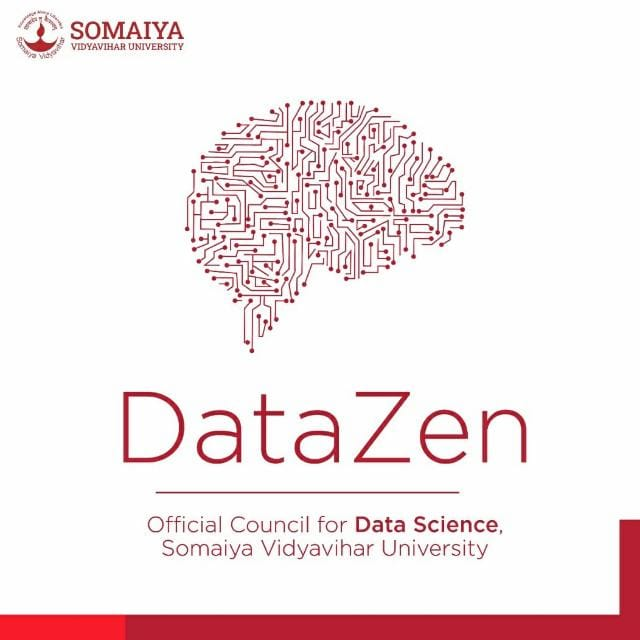

Experience
Data Scientist Intern at Mettler Toledo
October,2020 - April,2021
Solved Business Problems in sundry fields by efficacious utilization of data while ameliorating the existing pipelines to ease workflow of the processes by using Machine Learning. Also acquired RPA skills from working on projects with the senior members.
- Machine Learning
- Deep Learning
- Data and Business Analysis
- Robotic Process Automation
- Automating workflows and pipelines

Co-Founder at DataZen Somaiya
April,2021 - PRESENT
Lead a team of 30 people from different domains for increasing data literacy in many disparate domains through end-to-end projects.
- Leadership
- General Management
- Data Science
- Machine Learning


Data Scientist Intern at MedTourEasy
January,2021 - February,2021
Developed a project by analysing the fitness data of customers of fitness wearable products and delivered insights for optimizing the processes.
- Data Analysis
- Statistical Inference and Analysis
- Data Manipulation